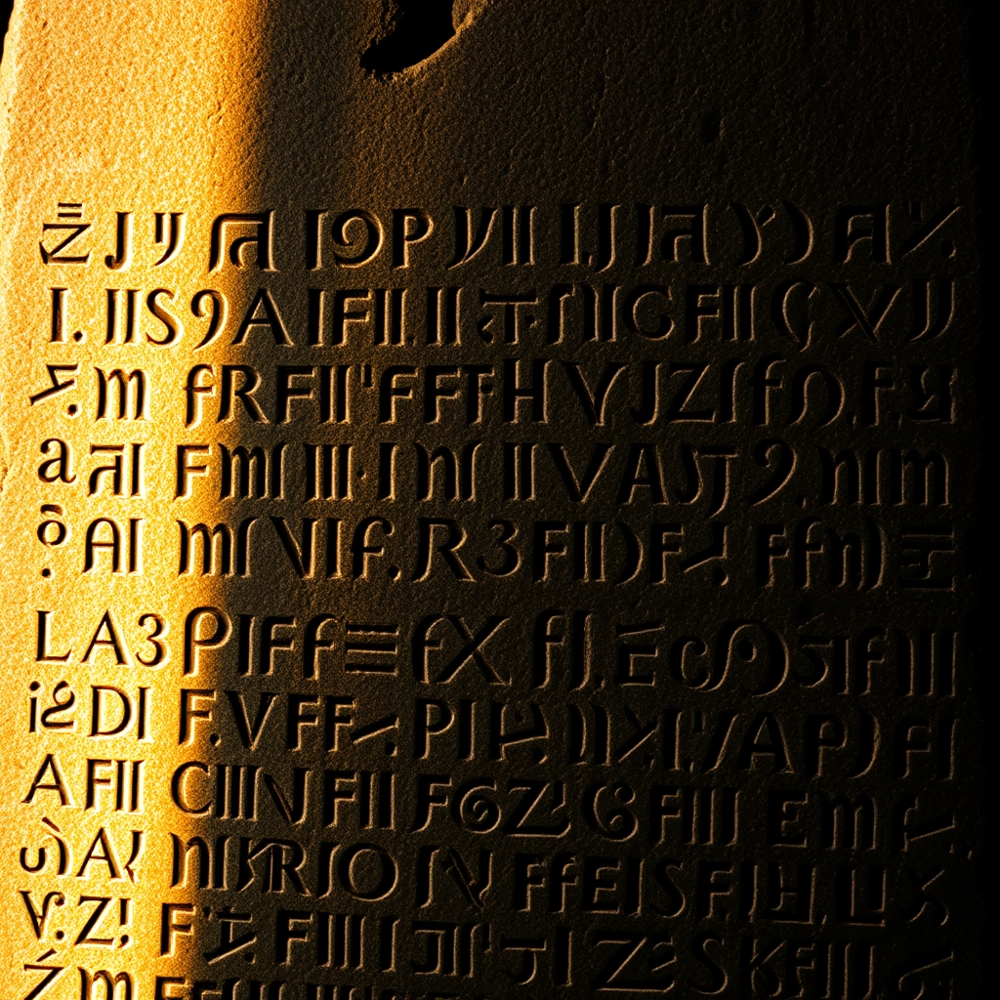

ETN Ecosystem
ኢትኤን ኢኮሲስተም
Decentralised platforms on the TON blockchain, built with an explicitly African frame of reference rather than an imported one.
Technologist and Pan-Africanist. Ethiopia's #1 technology channel. Founder of ETN Ecosystem. Building the digital layer of a country that refuses to wait for permission.
In 2020 the global conversation about artificial intelligence was happening in a language most Ethiopians do not wake up speaking, and the people explaining it were rarely the people building it. Jason Peters closed that gap himself — no franchise, no translation desk, no foreign backer.
ETHIO TECH with JayP — ኢትዮ ቴክ ከጄይፕ ጋር — began as one person doing research, scripting, presenting, editing and publishing in Amharic. It grew into the most-watched technology channel in the country.
The ETV interview on ChatGPT was the inflection point: the moment generative AI stopped being a foreign curiosity and became a domestic argument, conducted in Amharic, on national television, by somebody who had actually used the tools.

Decentralised platforms on the TON blockchain, built with an explicitly African frame of reference rather than an imported one.
A builder community around the ecosystem — apps, contributors, and the practical work of shipping on decentralised rails in Ethiopia.
Competitive gaming infrastructure in Addis Ababa — for a continent that has always had the players and never had the servers.
Much of Web3 in Africa has been built for foreign capital looking for a frontier. ETN reads as the inverse: a community in Ethiopia working out what decentralised platforms are actually for when the real constraints are payment rails, connectivity and trust — not speculative yield.
He took that argument to Ethiopian Blockchain Week 2025 as an invited panelist. The brief was Ethiopia's digital transformation on decentralised rails. He is one of the few people in the room who also had an audience of eighty thousand to explain it to afterwards.
Pan-Africanism is not a slogan you put on a conference badge. It is a decision about who your technology is designed for.Jason Peters — position as expressed across his published work